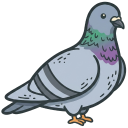
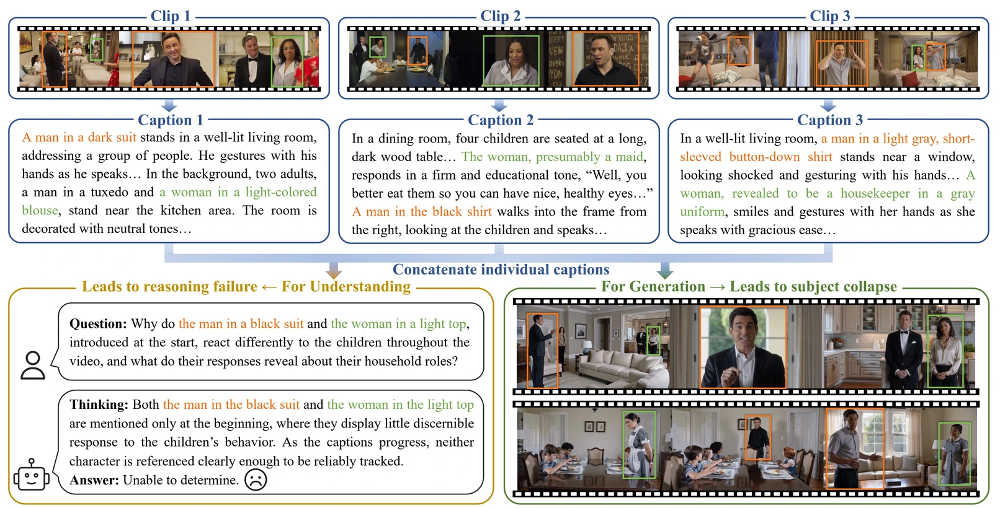
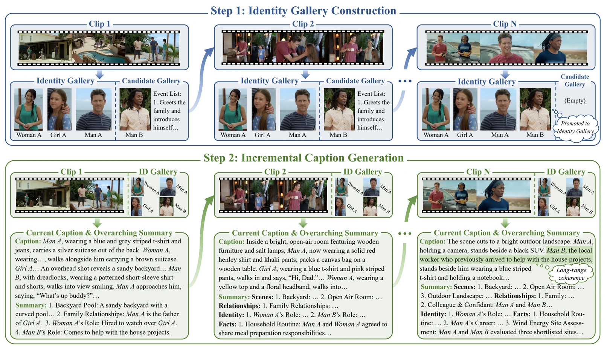
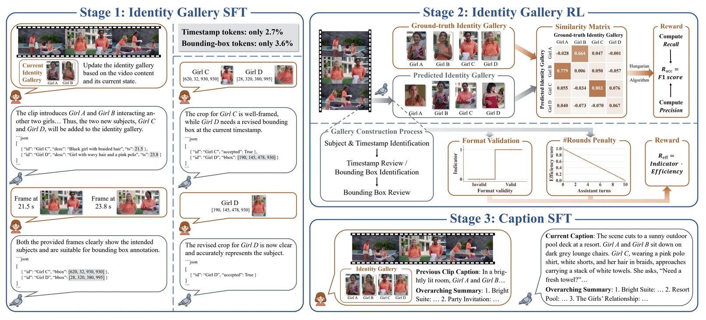
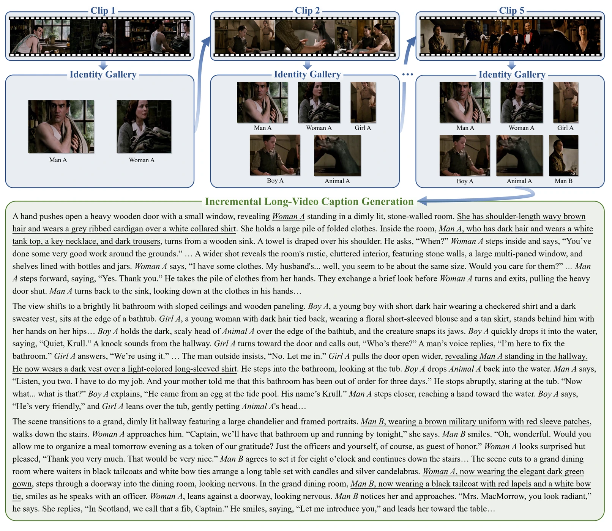
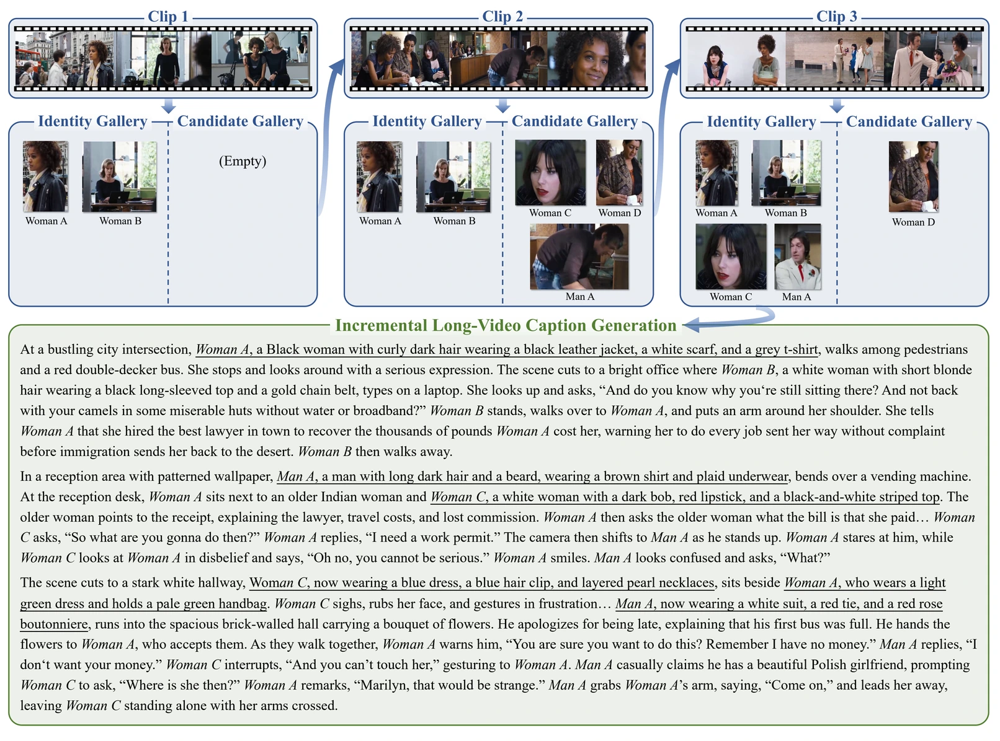

PIGEONS: Incremental Long-Video Captioning with Persistent Identity Gallery and Evolving Overarching Narrative Summary1New Laboratory of Pattern Recognition (NLPR), Institute of Automation, Chinese Academy of Sciences (CASIA)
2School of Artificial Intelligence, University of Chinese Academy of Sciences 3Kling Team
4The Hong Kong University of Science and Technology 5Peking University 6Nanjing University
Abstract
Detailed video captioning has become an essential semantic interface for multimodal understanding and generation. While existing methods mainly target short videos, extending them to long videos remains challenging, primarily due to limited context windows of current video understanding models. A naive solution is to adopt segment-wise captioning followed by concatenation, yet this paradigm often suffers from inconsistent subject references and fragmented long-range narratives. To mitigate these issues, we introduce PIGEONS, an incremental long-video captioning model built upon a Persistent Identity Gallery and an Evolving Overarching Narrative Summary. Before caption generation, PIGEONS scans the entire video to construct an identity gallery that captures key subjects along with their visual references, thereby providing a stable referential anchor. The model then performs clip-by-clip captioning conditioned on the persistent gallery and an evolving overarching narrative summary, which compactly maintains and updates essential long-range contextual information after each captioning step. To enable these capabilities, we develop a three-stage training strategy that integrates supervised fine-tuning and reinforcement learning. Extensive experiments demonstrate that PIGEONS markedly improves long-video captioning performance, achieving superior accuracy, completeness, and subject referential consistency over existing methods, while maintaining competitive performance on short-video captioning.
Motivation
Long videos can exceed the context windows of video understanding models, making it practical to divide them into shorter clips for captioning. However, independently captioning these clips can lead to inconsistent subject references and fragmented long-range narratives, as illustrated in Figure 1.

Method
Persistent Identity Gallery and Evolving Overarching Narrative Summary
PIGEONS first scans all video clips to construct a global identity gallery containing unique identifiers and reference images for key subjects. A candidate gallery tracks potential subjects during this process. The final identity gallery remains fixed during caption generation.
The model then generates captions clip by clip, conditioned on the identity gallery, the preceding caption, and an evolving narrative summary. The summary is updated after each clip to retain scenes, character relationships, subject roles, and established facts. The clip-level captions are concatenated to form the final long-video caption.

Three-stage Training

PIGEONS is built on Qwen3-Omni-Instruct. IG-SFT uses 16K identity-gallery construction samples. IG-RL uses GSPO on a 2K subset to improve gallery accuracy and construction efficiency. Cap-SFT uses 16K long-video captioning samples, mixed with identity-gallery data to retain gallery construction capabilities.
Experimental Results
We evaluate long-video captioning on CapRiCorn-1K, short-video captioning on UGC-VideoCap, and caption-based question answering on WorldSense.
| Model | Overall | (0, 2] min | (2, 5] min | (5, 8] min | (8, 10] min | ||||||||||
|---|---|---|---|---|---|---|---|---|---|---|---|---|---|---|---|
| Acc ↑ | Cov ↑ | Ref ↑ | Acc ↑ | Cov ↑ | Ref ↑ | Acc ↑ | Cov ↑ | Ref ↑ | Acc ↑ | Cov ↑ | Ref ↑ | Acc ↑ | Cov ↑ | Ref ↑ | |
| Gemini-3.1-Pro | 42.5 | 53.3 | 39.1 | 40.9 | 53.4 | 42.4 | 44.7 | 54.8 | 40.4 | 42.4 | 52.7 | 35.3 | 42.2 | 51.6 | 35.4 |
| Gemini-3-Flash | 41.5 | 52.8 | 39.6 | 42.8 | 55.9 | 46.3 | 42.1 | 52.9 | 38.1 | 41.1 | 51.3 | 36.6 | 38.5 | 48.3 | 32.3 |
| Qwen2.5-Omni | 5.1 | 13.2 | 0.6 | 6.7 | 17.4 | 1.2 | 5.9 | 13.7 | 0.5 | 3.4 | 10.0 | 0.3 | 2.6 | 8.5 | 0.1 |
| OmniVinci | 5.9 | 13.3 | 1.2 | 9.9 | 21.2 | 2.5 | 5.3 | 12.0 | 0.6 | 3.2 | 8.3 | 0.4 | 2.5 | 6.2 | 0.5 |
| ARC-Qwen-Video | 6.9 | 10.9 | 2.0 | 9.2 | 15.3 | 3.4 | 7.2 | 11.0 | 1.8 | 5.8 | 9.0 | 1.4 | 2.8 | 4.4 | 0.4 |
| Qwen3-Omni-Instruct | 10.3 | 20.2 | 1.6 | 13.3 | 24.6 | 2.5 | 10.6 | 20.3 | 1.6 | 8.0 | 17.6 | 0.9 | 6.5 | 14.5 | 0.7 |
| UGC-VideoCaptioner | 11.8 | 21.8 | 3.6 | 17.4 | 30.6 | 7.4 | 11.0 | 20.1 | 2.1 | 8.3 | 17.0 | 1.4 | 6.5 | 13.2 | 0.9 |
| Qwen3-Omni-Captioner | 14.3 | 27.5 | 4.1 | 18.1 | 33.5 | 7.0 | 14.4 | 27.4 | 3.4 | 11.4 | 23.0 | 2.3 | 10.2 | 21.4 | 1.9 |
| ASID-Captioner | 18.9 | 31.1 | 12.9 | 30.2 | 47.3 | 26.3 | 18.6 | 30.4 | 10.3 | 10.5 | 19.3 | 3.8 | 7.7 | 14.9 | 1.9 |
| video-SALMONN-2 | 22.5 | 37.6 | 11.3 | 27.6 | 46.0 | 18.2 | 23.2 | 37.6 | 10.6 | 19.9 | 33.2 | 7.1 | 14.3 | 26.2 | 4.0 |
| DiaDem | 24.6 | 35.8 | 14.5 | 40.0 | 54.7 | 31.3 | 23.1 | 33.2 | 10.2 | 13.6 | 23.0 | 3.3 | 10.3 | 18.3 | 2.0 |
| AVoCaDO | 28.8 | 41.9 | 18.4 | 43.7 | 60.6 | 36.6 | 29.8 | 42.4 | 15.8 | 17.0 | 27.5 | 5.2 | 12.9 | 22.3 | 3.1 |
| PIGEONS (Ours) | 50.7 | 65.4 | 51.8 | 42.5 | 60.3 | 51.3 | 51.0 | 65.9 | 52.8 | 55.7 | 68.6 | 52.2 | 60.1 | 70.8 | 50.5 |
| Model | UGC-VideoCap · under 60 seconds | WorldSense · accuracy by caption | |||||||
|---|---|---|---|---|---|---|---|---|---|
| Audio | Visual | Detail | Avg | (0, 2] min | (2, 4] min | (4, 6] min | (6, 8] min | (8, 12] min | |
| Gemini-3.1-Pro | 72.6 | 77.8 | 76.2 | 75.6 | 28.8 | 27.9 | 29.9 | 26.5 | 36.2 |
| Gemini-3-Flash | 71.4 | 76.7 | 75.1 | 74.4 | 25.8 | 24.7 | 24.4 | 23.5 | 30.2 |
| Qwen2.5-Omni | 46.9 | 66.1 | 60.0 | 57.7 | 10.5 | 6.6 | 4.5 | 3.7 | 4.0 |
| UGC-VideoCaptioner | 61.4 | 58.4 | 57.5 | 59.1 | 12.9 | 8.9 | 6.3 | 8.8 | 7.4 |
| video-SALMONN-2 | 61.8 | 71.4 | 68.5 | 67.2 | 18.4 | 17.3 | 17.2 | 17.7 | 22.2 |
| Qwen3-Omni-Instruct | 67.5 | 74.8 | 72.3 | 71.5 | 13.5 | 11.0 | 13.1 | 7.4 | 14.1 |
| Qwen3-Omni-Captioner | 69.0 | 75.5 | 72.3 | 72.5 | 15.7 | 11.8 | 10.4 | 9.6 | 11.4 |
| AVoCaDO | 73.0 | 74.6 | 71.8 | 73.2 | 27.4 | 23.1 | 20.4 | 22.1 | 25.5 |
| PIGEONS (Ours) | 65.9 | 75.9 | 73.1 | 71.7 | 25.1 | 25.8 | 24.9 | 30.2 | 35.6 |
Acc, Cov, and Ref denote accuracy, coverage, and subject referential consistency. WorldSense measures question-answering accuracy from generated captions using Gemini-2.5-Pro, following AVoCaDO. Bold values indicate the best result in each column of Tables 1 and 2.
Ablation Studies
| Setting | Training order | Acc ↑ | Cov ↑ | Ref ↑ |
|---|---|---|---|---|
| Base model, whole video | — | 10.3 | 20.2 | 1.6 |
| Base model, segment & concat | — | 24.5 | 37.8 | 9.6 |
| Caption SFT without gallery | Cap-SFT w/o IG | 49.1 | 64.4 | 28.1 |
| Caption SFT only | Cap-SFT | 49.0 | 64.0 | 49.4 |
| Gallery RL after caption SFT | Cap-SFT → IG-RL | 47.4 | 62.6 | 48.4 |
| Without gallery RL | IG-SFT → Cap-SFT | 49.3 | 63.8 | 49.9 |
| Gallery RL last | IG-SFT → Cap-SFT → IG-RL | 46.9 | 62.1 | 48.7 |
| Without efficiency reward | IG-SFT → IG-RL → Cap-SFT | 49.8 | 64.3 | 50.2 |
| PIGEONS (Ours) | IG-SFT → IG-RL → Cap-SFT | 50.7 | 65.4 | 51.8 |
| Model | Acc ↑ | Cov ↑ | Ref ↑ | Avg caption length |
|---|---|---|---|---|
| AVoCaDO-Concat | 49.8 | 64.1 | 34.1 | 3025.7 |
| PIGEONS (Ours) | 50.7 | 65.4 | 51.8 | 1271.5 |
With a similar segment-wise setup, PIGEONS improves referential consistency over AVoCaDO-Concat from 34.1 to 51.8 while reducing the average caption length from 3025.7 to 1271.5.
Captioning Examples
Examples of captions generated by PIGEONS across multiple clips. Underlined passages indicate cross-segment references; overarching narrative summaries are omitted for brevity.


BibTeX
@article{chen2026pigeons,
title={PIGEONS: Incremental Long-Video Captioning with Persistent Identity Gallery and Evolving Overarching Narrative Summary},
author={Chen, Xinlong and Lin, Weihong and Zhang, Yuanxing and Liu, Xinyu and Ding, Yue and Li, Bozhou and Zeng, Bohan and Shi, Yang and Liu, Qiang and Wan, Pengfei and others},
journal={arXiv preprint arXiv:2610.16066},
year={2026}
}